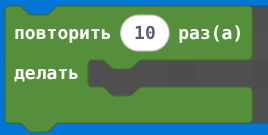
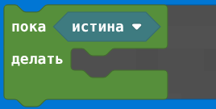
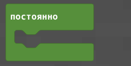
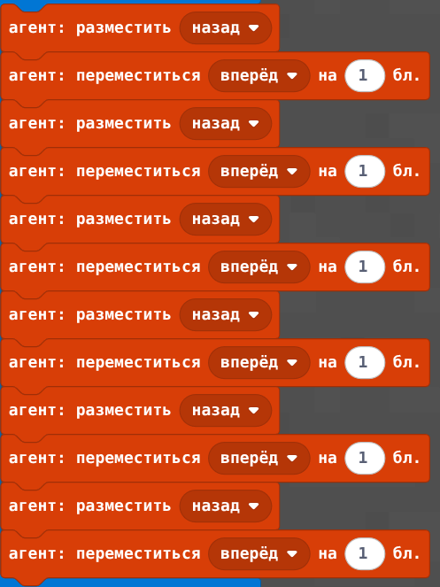
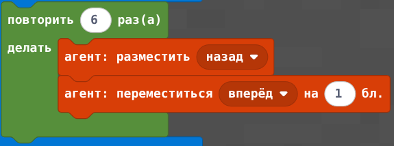
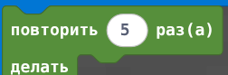
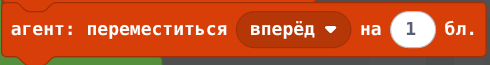
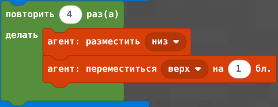
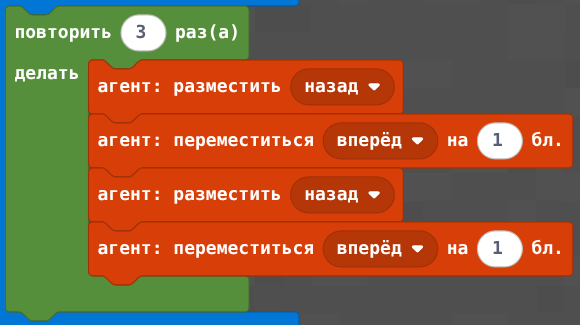
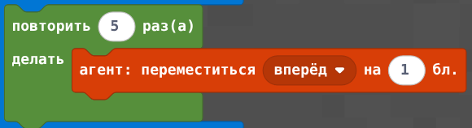

🎯 Цели занятия
- Понять, что такое цикл и зачем он нужен в программировании
- Научиться использовать блок «повторить N раз» в Minecraft Education
- Сравнить длинный код и код с циклом
- Закрепить навыки на интерактивных заданиях
📋 План занятия
| Этап занятия | Время | Что делаем |
|---|---|---|
| Орг. момент | 5 мин | Приветствие, настрой на занятие |
| Что такое цикл? | 15 мин | Теория: зачем нужны циклы, примеры из жизни |
| Цикл в Minecraft | 20 мин | Изучаем блок «повторить N раз», сравниваем с длинным кодом |
| Интерактивные задания | 25 мин | Собираем алгоритмы, находим ошибки, пишем код |
| Практическое задание | 15 мин | Закрепляем: строим башню и стену с помощью циклов |
| Опрос и итоги | 10 мин | Проверяем знания, обсуждаем |
| Итого | 90 мин | — |
1 Что такое цикл?
Циклы в реальной жизни
Представь, что тебе нужно сказать «Привет!» 100 раз. Писать одну и ту же команду 100 раз — долго и скучно. В программировании для этого есть циклы.
В жизни мы тоже постоянно используем циклы:
- Каждый день мы чистим зубы — это повторяющееся действие
- На уроке физкультуры мы делаем 10 приседаний — это цикл с заданным количеством повторений
- Пока идёт дождь, мы сидим дома — это цикл, который выполняется, пока условие истинно
-- Без цикла (10 раз повторяем одно и то же)
1. Сказать "Привет!"
2. Сказать "Привет!"
3. Сказать "Привет!"
4. Сказать "Привет!"
5. Сказать "Привет!"
6. Сказать "Привет!"
7. Сказать "Привет!"
8. Сказать "Привет!"
9. Сказать "Привет!"
10. Сказать "Привет!"
-- С циклом (всего 2 строки!)
Повторить 10 раз [
Сказать "Привет!"
]Виды циклов
| Вид цикла | Когда используется | Пример |
|---|---|---|
| Цикл с параметром ( повторить N раз) |
Когда точно знаем, сколько раз нужно повторить | «Сделай 10 приседаний» |
| Цикл с условием ( повторить пока) |
Когда повторяем, пока верно условие | «Пока идёт дождь, сиди дома» |
| Бесконечный цикл ( повторить навсегда) |
Когда действие должно выполняться постоянно | «Игровой сервер всегда работает» |
🧠 Проверь понимание
Какая команда заставит агента сделать 5 шагов вперёд?
2 Цикл в Minecraft Education
В редакторе кода Minecraft Education есть специальный блок — «повторить N раз». Он выглядит как жёлтый блок-пазл с числом внутри.
| Блок | Что делает | Пример |
|---|---|---|
 | Повторяет команды внутри 10 раз | повторить 4 раз [двигаться вперёд] |
 | Повторяет, пока условие верно | повторить пока [есть блок впереди] ... |
 | Бесконечный цикл (для игр) | повторить навсегда [двигаться вперёд] |
-- Без цикла (строим стену из 6 блоков)

-- С циклом (всего 3 строки!)

🔍 Найди, где можно использовать цикл
В каком случае лучше использовать цикл, а не писать команды по одной?
3 Интерактивные задания
Теперь попробуй сам собрать алгоритмы с циклами и найти ошибки.
🧩 Собери алгоритм с циклом
Перетащи шаги в правильном порядке, чтобы агент поставил 5 блоков по прямой:


🕵️ Найди ошибку в алгоритме
Агент должен построить башню из 4 блоков, но алгоритм не работает. Какая ошибка?

🔢 Сколько раз выполнится цикл?
Посчитай, сколько блоков поставит агент, если выполнить этот код:

Нажми на вопрос — Алиса ответит тебе прямо сейчас!
Просто скажи: «Алиса, объясни циклы для детей»
🛠️ Практическое задание: строим с циклом
Перейдём к практике. Запусти Minecraft Education, создай плоский мир и выполни следующие задания, используя циклы.
📌 Задание 1: Движение вперёд
повторить 10 раз и внутри него команду двигаться вперёд.
📌 Задание 2: Стена из блоков
повторить 8 раз. Внутри цикла: сначала поставить блок, затем двигаться вперёд.
📌 Задание 3: Квадрат 3×3
повторить 3 раз для постановки 3 блоков в строку. Затем поверни налево, сделай шаг вперёд и ещё раз поверни налево. Повтори всё это 3 раза — так получится квадрат 3×3.
⭐ Бонусное задание
💭 Рефлексия
Напиши, что тебе понравилось, а что было сложно:
📝 Проверь себя
1. Что такое цикл в программировании?
2. Какой блок используется для циклов в Minecraft Education?
3. Что произойдёт, если в цикле написать повторить 0 раз?
4. Зачем использовать циклы вместо повторяющихся команд?
5. Сколько раз выполнится код: 